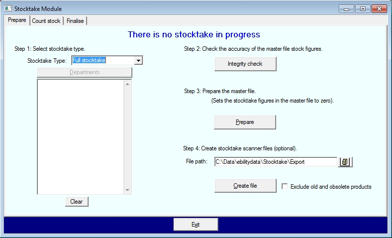

Cease all stock movement
It is imperative that stock not be moved during a stocktake. It leads to double counting and counting stock that has not been posted to the database. Before proceeding further ensure that all selling, moving, receiving and despatching of stock ceases.
Re-index the database
To ensure that your database is in proper condition for the stocktake, re-index it:
| · | From the main menu, select Modules/ Re-index Tables.
|
| · | In the Re-index Tables window that opens, click on the Select All button and then the Re-index button.
|
| · | Click Close when done.
|
Stock valuation report
This one page report will provide a snapshot of your pre-stocktake stock holding. It gives total figures and is useful in reporting the stocktake results.
| · | Open Bookscan Report.
|
| · | Select the report Title/Valuation/All.
|
Database integrity check
This routine will cross-check the accuracy of certain files used in conjunction with stocktaking. In particular, it checks the approval information stored against each title.
| · | From the main menu, select Modules/ Stocktake/ Integrity.
|
| · | In the Integrity Check window that opens, ensure that the Stock Fields option is checked.
|
| · | Click on the Start button.
|
Setting the system to stocktake mode
This is the last step to be taken just before the counting starts. It does two things:
| · | Zeroes the Last Stocktake field on every title record.
|
| As you count your stock, the count is added to this field.
|
| The stocktake count remains stored here until this step is run again at the next stocktake. This is why you can print stocktake reports (except Overs and Unders) at any time until the next stocktake.
|
| · | Sets an internal flag that indicates a stocktake is now in progress. This flag allows you access the stocktake counting screens.
|
